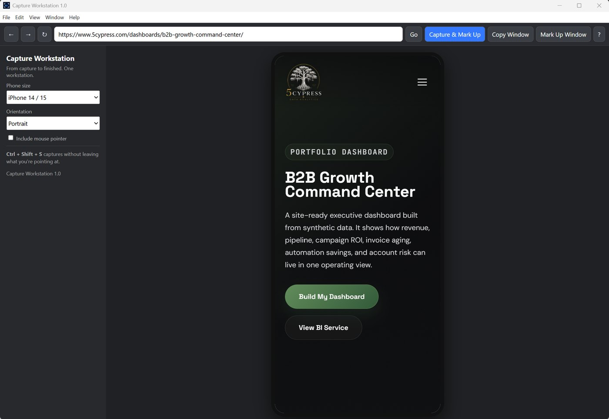
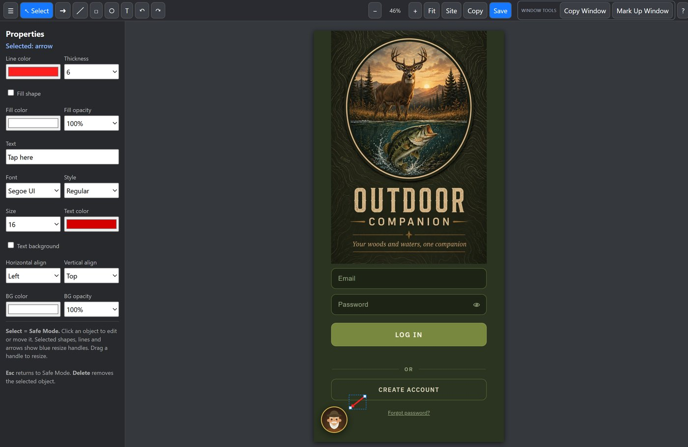
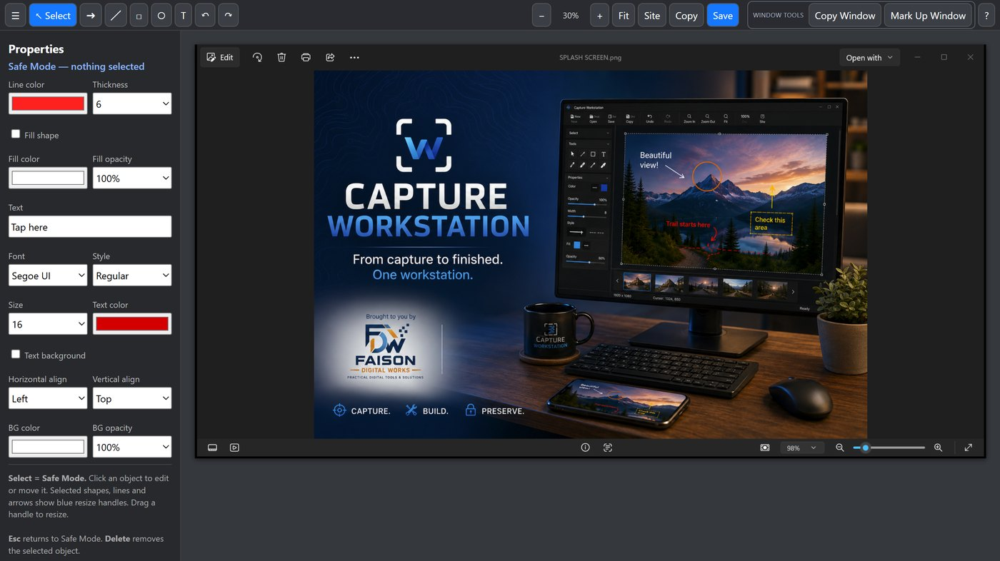
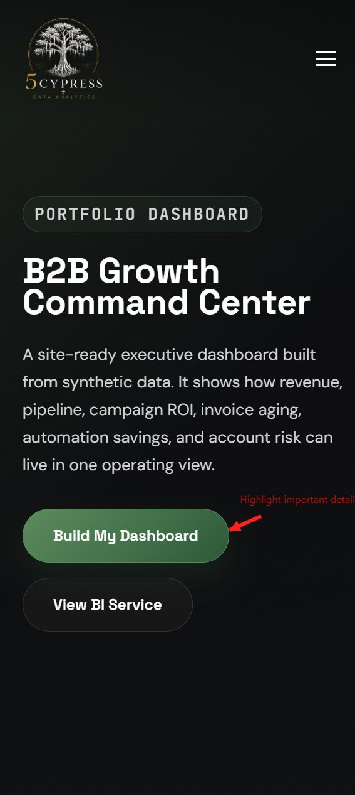

Faison Digital Works › Capture Workstation
From capture to finished. One workstation.
A Windows desktop app for capturing, resizing, annotating and preparing screenshots and images — without bouncing between four different tools to get one picture finished.

What it does
Grab the screen, size it for the device you're designing for, mark it up, and save the finished file — all in the same place.
Capture a region, a single window, or the whole screen. Ctrl + Shift + S grabs the shot without making you leave what you're pointing at.
Preview and capture a site at real phone dimensions — iPhone 14/15 and other sizes, portrait or landscape — so what you hand over matches what people actually see.
Arrows, lines, rectangles, ellipses and text with real control — line color and thickness, fill and opacity, font, size and alignment. Move and resize anything after you place it.
Zoom, pan, undo and redo while you work. Copy straight to the clipboard for pasting into a message, or save the finished image as a file.
No account. Nothing uploaded. Captures, annotations and exported files never leave your computer — the app only touches files you choose.
No third-party advertising, no behavioral tracking, no analytics watching what you capture. You bought a tool, not a subscription to being measured.
A look inside
Real screenshots from the application — not mockups.




Every screenshot on this page was made with Capture Workstation.
Requirements
Questions
Bug reports, questions and feature suggestions go to the developer directly.